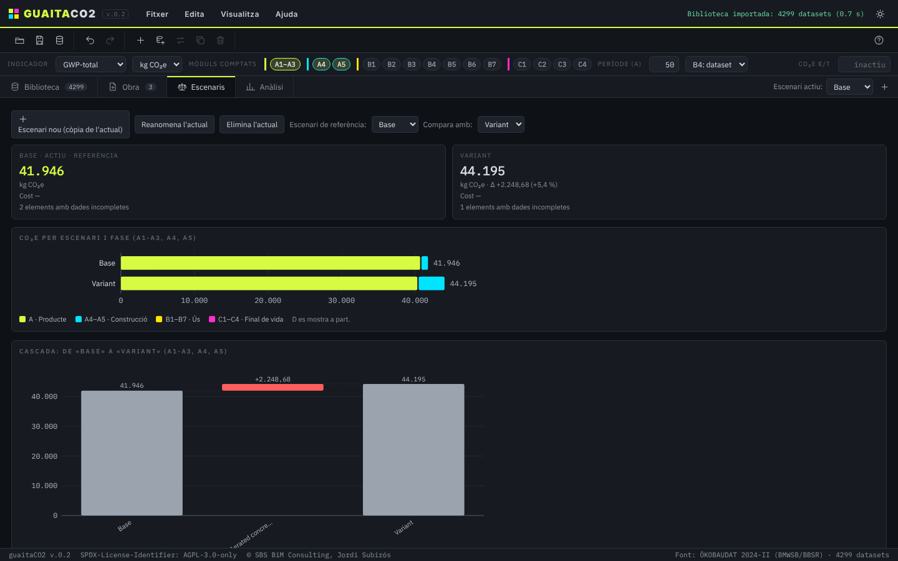
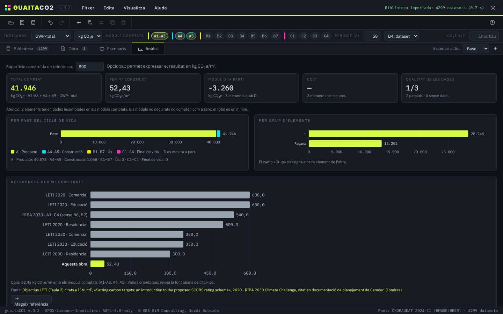

What it does
Decide with carbon in view
Modules A1–D
Results per stage (A1-A3, A4, A5, B1-B7, C1-C4) with D shown apart, and an undeclared “·” clearly distinct from zero.
Alternatives and scenarios
Substitute materials, compare scenarios with a waterfall, Δ CO₂e and Δ cost, and find the hotspots.
Layered solutions
Walls, slabs and roofs as layers per m², with service life and B4 either computed or from the dataset.
Teaching cases
Brief, reduction goal and cost limit for student mode; printable report.
Per-m² references
Contrast with LETI and RIBA values with cited sources.
100% local
A single HTML file. Data in the browser (IndexedDB), no server and no tracking.
Screenshots
The app



How to start
Three steps
- Download the ÖKOBAUDAT CSV (free) and open the app.
- Import the CSV: it is read on your computer and stored in your browser.
- Add elements, compare alternatives and scenarios, and print the report.
Legal
Licence, data and notice
- Free software (AGPL-3.0-only). guaitaCO2 is free software under the GNU Affero General Public License v3.0. © 2026 Jordi Subirós · SBS BiM Consulting. If you distribute a modified version or offer it over a network, you must provide the source code to its users under the same licence.
- ÖKOBAUDAT data: not included. The app does not include or redistribute any ÖKOBAUDAT data: each user downloads it from the official source and imports it locally. Source: ÖKOBAUDAT, Bundesministerium für Wohnen, Stadtentwicklung und Bauwesen (BMWSB) / BBSR, oekobaudat.de. Always cite the source. Redistribution terms have not been confirmed: check them with BBSR before republishing any data.
- Correct use of the data. ÖKOBAUDAT is not designed for the LCA of a single product. Do not mix A1–A3 data from one database with modules from another, and always compare at equal functional unit.
- Indicative and educational tool. Results are indicative: they are not a certification, an EPD or a building LCA, and do not replace professional technical judgement.
- Privacy. All processing is local in the browser (IndexedDB). There is no server, accounts, tracking cookies or analytics; no data is sent to third parties.
- Independence. guaitaCO2 is independent: it is not affiliated with, endorsed or sponsored by BMWSB, BBSR, LETI or RIBA. This text is not legal advice.
- Reference values. The per-m² values from LETI and RIBA come from secondary sources cited in the app; verify them against the original publications.
- No warranty. Guaita Apps is distributed “as is”, without any warranty. The tools are conceived from research and as technical and educational support; verification of results and any responsibility arising from their use rest solely with the end user. (Translation of the Catalan original, which prevails.)